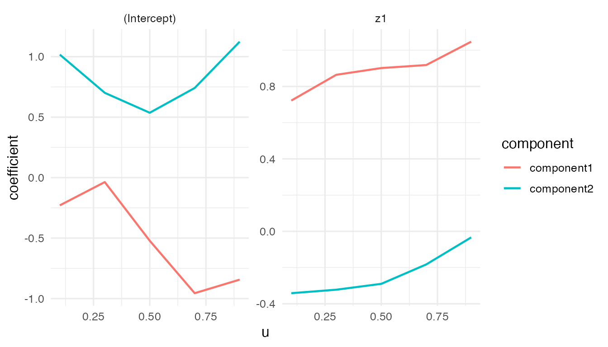
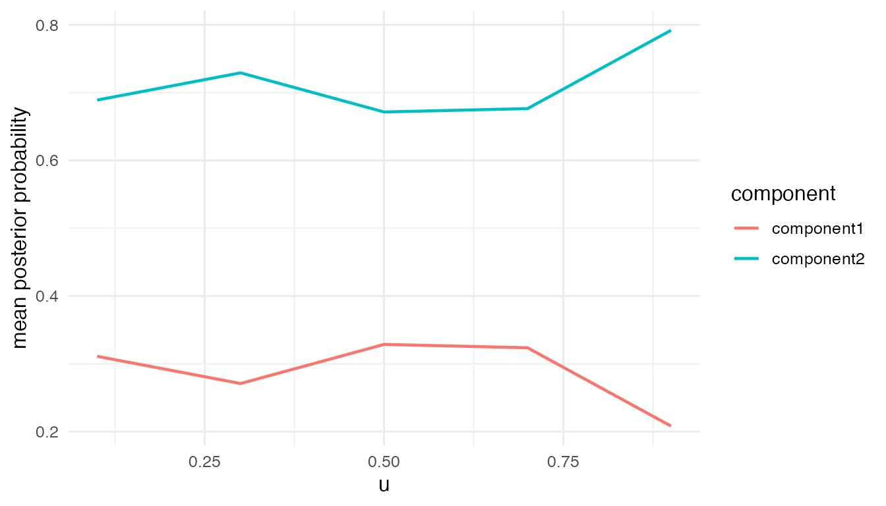

Gaussian VCMoE Simulation Tutorial
Source:vignettes/vcmoe-gaussian-no-offset.Rmd
vcmoe-gaussian-no-offset.RmdThis vignette shows the basic steps for a Gaussian varying-coefficient mixture-of-experts model:
- install and load
VCMoE; - simulate a small Gaussian example;
- fit
vcmoe_fit(); - inspect coefficient functions, posterior probabilities, and diagnostics.
The example uses k = 2, which is the easiest setting for learning the package API and checking that the label-alignment diagnostics behave as expected.
Installation from GitHub
Install the package from GitHub with remotes:
install.packages("remotes")
remotes::install_github("qc-zhao/VCMoE")Then load the package:
Simulate Gaussian data
simulate_vcmoe_gaussian() returns a data frame and the known truth used to generate it. The response is Gaussian, while the component-specific expert coefficients and gating probabilities vary with the continuous coordinate u.
sim <- simulate_vcmoe_gaussian(
n = 240,
k = 2,
seed = 1,
separation = 1.4,
scenario = "well_separated"
)
head(sim$data)
#> y u z1 x1 component
#> 1 1.46391885 0.01307758 -0.5059575 -2.5923277 2
#> 2 0.45150293 0.01339033 1.3430388 1.3140022 2
#> 3 -0.07840661 0.02333120 -0.2145794 -0.6355430 1
#> 4 -0.65570670 0.03554058 -0.1795565 -0.4299788 1
#> 5 -0.88436358 0.04646089 -0.1001907 -0.1693183 1
#> 6 0.06568162 0.05893438 0.7126663 0.6122182 1
str(sim$truth, max.level = 1)
#> List of 9
#> $ expert : num [1:240, 1:2, 1:2] -0.586 -0.585 -0.551 -0.51 -0.474 ...
#> ..- attr(*, "dimnames")=List of 3
#> $ gating : num [1:240, 1:2, 1:2] -0.27 -0.27 -0.267 -0.263 -0.259 ...
#> ..- attr(*, "dimnames")=List of 3
#> $ sigma : num [1:240, 1:2] 0.351 0.351 0.351 0.352 0.352 ...
#> ..- attr(*, "dimnames")=List of 2
#> $ probability: num [1:240, 1:2] 0.156 0.51 0.308 0.33 0.357 ...
#> $ logits : num [1:240, 1:2] -0.8444 0.0205 -0.4058 -0.3551 -0.2947 ...
#> $ mean : num [1:240, 1:2] -0.912 0.283 -0.691 -0.628 -0.541 ...
#> $ component : int [1:240] 2 2 1 1 1 1 1 1 2 2 ...
#> $ scenario : chr "well_separated"
#> $ terms :List of 2Fit the model
The formula has two parts:
-
y ~ z1is the expert mean model; -
| x1is the gating model.
The varying coordinate is supplied separately through u = "u". By default, vcmoe_fit() uses Epanechnikov density weights, a scaled local-linear basis, and unit scaling of u.
fit <- vcmoe_fit(
y ~ z1 | x1,
data = sim$data,
u = "u",
family = "gaussian",
k = 2,
bandwidth = 0.30,
u_grid = seq(0.1, 0.9, length.out = 5),
control = list(maxit = 80, n_starts = 2, seed = 2)
)
fit
#> VCMoE fit
#> family: gaussian
#> components: 2
#> label alignment: global
#> kernel: epanechnikov (density_over_bandwidth)
#> local basis: (u - u0) / bandwidth
#> u scale: unit
#> grid points: 5
#> bandwidth: 0.3
#> converged grid points: 5/5Coefficients and predictions
Expert coefficients are returned as an array indexed by grid point, component, and term. Posterior probabilities are returned with one column per component.
expert_coef <- coef(fit, "expert")
dim(expert_coef)
#> [1] 5 2 2
expert_coef[, , "z1"]
#> component
#> u component1 component2
#> 0.1 0.7219067 -0.34152286
#> 0.3 0.8642307 -0.32224523
#> 0.5 0.9013834 -0.28998022
#> 0.7 0.9180562 -0.18282712
#> 0.9 1.0469837 -0.03351975
posterior <- predict(fit, type = "posterior")
head(posterior)
#> [,1] [,2]
#> [1,] 8.922896e-07 9.999991e-01
#> [2,] 7.899766e-01 2.100234e-01
#> [3,] 9.775080e-01 2.249200e-02
#> [4,] 9.999230e-01 7.701971e-05
#> [5,] 9.999901e-01 9.927720e-06
#> [6,] 9.104549e-01 8.954513e-02
rowSums(head(posterior))
#> [1] 1 1 1 1 1 1
fitted_mean <- predict(fit, type = "mean")
head(fitted_mean)
#> [1] 1.1896767 0.7020420 -0.3510114 -0.3587783 -0.3015808 0.3289356Diagnostics
Always inspect diagnostics before interpreting coefficient functions. The most important early checks are grid convergence, label ambiguity, component proportions, posterior entropy, and effective local sample size.
diagnostics <- vcmoe_diagnostics(fit)
diagnostics[, c("u", "converged", "ambiguous", "posterior_entropy", "effective_n")]
#> u converged ambiguous posterior_entropy effective_n
#> 1 0.1 TRUE FALSE 0.2123831 77.73469
#> 2 0.3 TRUE FALSE 0.2262570 123.66422
#> 3 0.5 TRUE FALSE 0.2086574 131.44235
#> 4 0.7 TRUE FALSE 0.1471565 122.84420
#> 5 0.9 TRUE FALSE 0.1160909 82.69806Plots
plot_coefficients() shows the fitted coefficient functions. For a simulated example, the plot is mainly a quick visual check that the fitted paths are smooth and labels remain connected across the grid.
plot_coefficients(fit, "expert")
plot_posterior() summarizes posterior component probabilities over u.
plot_posterior(fit)
Optional: bandwidth selection
For real analyses, bandwidth should usually be selected rather than fixed by hand. The cross-validation selector uses held-out predictive log-likelihood and returns a final refit by default.
selection <- vcmoe_select_bandwidth(
y ~ z1 | x1,
data = sim$data,
u = "u",
family = "gaussian",
k = 2,
bandwidth_grid = c(0.24, 0.30, 0.36),
folds = 3,
u_grid = seq(0.1, 0.9, length.out = 5),
control = list(maxit = 80, n_starts = 2, seed = 3),
seed = 4
)
selection
selection$best_bandwidth